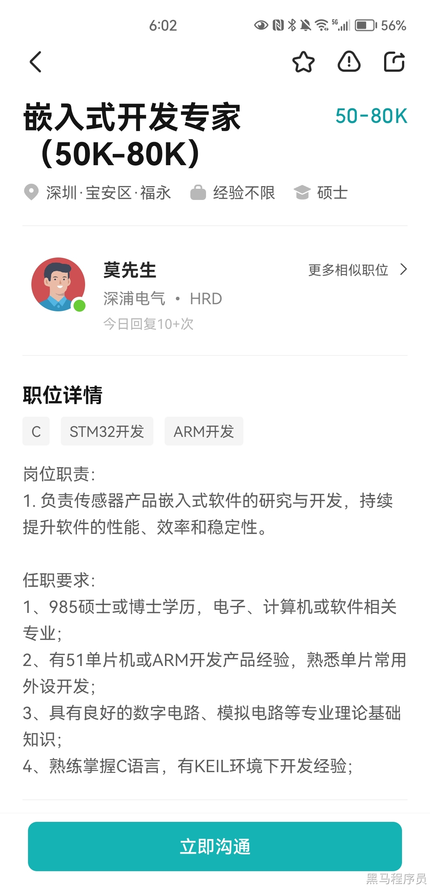
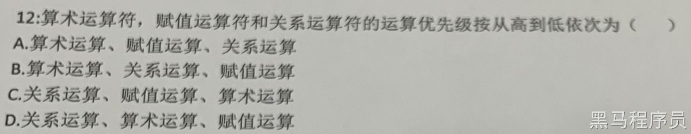
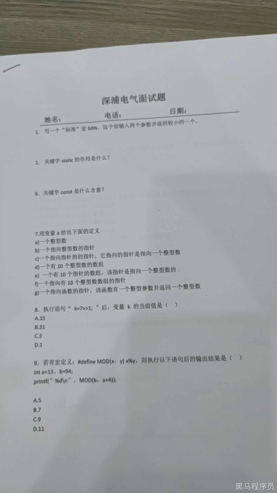
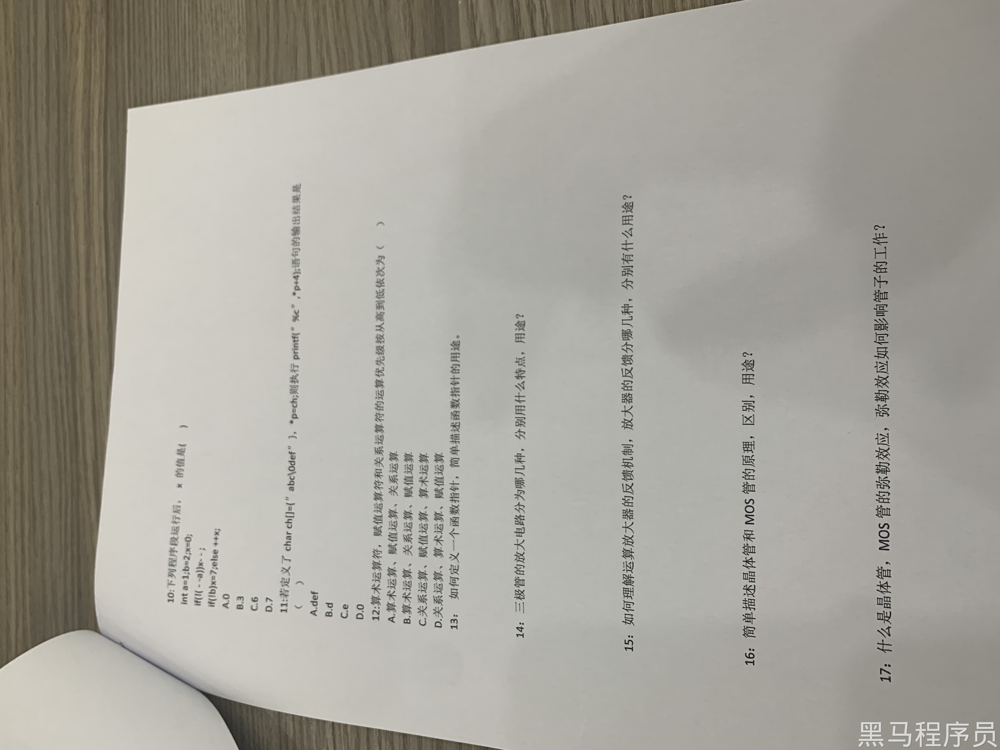

<!DOCTYPE lake>
<p data-lake-id="uba47f6a6" id="uba47f6a6"><span data-lake-id="u4fbbffa5" id="u4fbbffa5">本科学历 待遇18-30K 。</span></p><p data-lake-id="u94ff02fa" id="u94ff02fa"><span data-lake-id="u217555cf" id="u217555cf">985硕士，博士薪资翻倍。</span></p><p data-lake-id="u91a9abe8" id="u91a9abe8"></p><p data-lake-id="ue599a983" id="ue599a983"><span data-lake-id="uaa10e17b" id="uaa10e17b">​</span><br/></p><ol list="udae81298"><li data-lake-id="u0f3618d6" fid="u0c6a26d1" id="u0f3618d6"><span data-lake-id="ude018522" id="ude018522">写一个标准的MIN宏</span></li></ol><blockquote data-lake-id="u31bfc856" id="u31bfc856"><p data-lake-id="u026b47db" id="u026b47db"><span data-lake-id="u5ed1092c" id="u5ed1092c">define MIN(a,b) (((a)&gt;(b)) ? (b):(a))</span></p><p data-lake-id="u755331cc" id="u755331cc"><span data-lake-id="u901f8ffc" id="u901f8ffc">define MIN(a, b) (((a) &lt; (b)) ? (a) : (b))</span></p></blockquote><p data-lake-id="u5b3204d9" id="u5b3204d9"><br/></p><ol list="ua779f97f" start="2"><li data-lake-id="ud867b4ae" fid="u07b4b8ab" id="ud867b4ae"><span data-lake-id="ud35b6393" id="ud35b6393">关键字static的作用</span></li></ol><blockquote data-lake-id="u88b2c3f1" id="u88b2c3f1"><p data-lake-id="u0b37aac1" id="u0b37aac1"><span data-lake-id="ub93ef5b0" id="ub93ef5b0">出现过很多次的题， 函数内部static变量，值可以保留。</span></p><p data-lake-id="u4fa3ab6c" id="u4fa3ab6c"><span data-lake-id="u045e347c" id="u045e347c">函数修饰static 这个函数只能在模块内部使用</span></p></blockquote><ol list="u1e62122e" start="6"><li data-lake-id="u0e61089f" fid="uf0714617" id="u0e61089f"><span data-lake-id="ua45fd9a0" id="ua45fd9a0">const关键字的含义</span></li></ol><blockquote data-lake-id="u60c1c14d" id="u60c1c14d"><p data-lake-id="uf7528adb" id="uf7528adb"><span data-lake-id="u00a64ded" id="u00a64ded">修饰值，值不可以被修改</span></p><p data-lake-id="u27c1ce49" id="u27c1ce49"><span data-lake-id="uaf230973" id="uaf230973">防止意外修改：通过使用 const，可以明确地表示一个变量是不可修改的，从而避免在代码中意外修改该变量的值。</span></p><p data-lake-id="u4ce8b991" id="u4ce8b991"><span data-lake-id="u2e970249" id="u2e970249">接口定义：函数声明，参数声明为 const 可以表明函数不会修改这些参数的值，从而提供了更清晰的接口定义。</span></p></blockquote><ol list="ud6aeb588" start="7"><li data-lake-id="u44c4332c" fid="ud81fb51f" id="u44c4332c"><span data-lake-id="u9c2b6592" id="u9c2b6592">代码</span></li></ol><span class="yuque-card-unsupported">[codeblock]</span><p data-lake-id="u52c59289" id="u52c59289"><br/></p><ol list="u9057f0c5" start="8"><li data-lake-id="u6a4baf7e" fid="u637c03c5" id="u6a4baf7e"><span data-lake-id="u59fff507" id="u59fff507">执行 k=7&gt;&gt;1后 k的值</span></li></ol><blockquote data-lake-id="uebd7dd4b" id="uebd7dd4b"><p data-lake-id="u256c54ec" id="u256c54ec"><span data-lake-id="uf070bb9e" id="uf070bb9e">对于整数 7，其二进制表示为 0111。执行右移位运算 7 &gt;&gt; 1，将 0111 向右移动一位，得到 0011。</span></p><p data-lake-id="u34bbf407" id="u34bbf407"><span data-lake-id="u4a448d8d" id="u4a448d8d">​</span><br/></p><p data-lake-id="uaeb8a8d7" id="uaeb8a8d7"><span data-lake-id="u4e2e1acd" id="u4e2e1acd">所以，k 的值为 3。</span></p></blockquote><p data-lake-id="ub7469222" id="ub7469222"><span data-lake-id="u5f673841" id="u5f673841">​</span><br/></p><ol list="u0f16262e" start="9"><li data-lake-id="u1967d396" fid="ub368ec10" id="u1967d396"><span data-lake-id="uf56ed1a5" id="uf56ed1a5">选B  94%13+4  结果为7</span></li></ol><p data-lake-id="u8ef68efb" id="u8ef68efb"><span data-lake-id="u961f389c" id="u961f389c">​</span><br/></p><p data-lake-id="u10a89cff" id="u10a89cff"><span data-lake-id="u70d82ba6" id="u70d82ba6">10.</span></p><span class="yuque-card-unsupported">[codeblock]</span><p data-lake-id="u26fdf664" id="u26fdf664"><span data-lake-id="ucaf7ac4b" id="ucaf7ac4b">x的值为0</span></p><p data-lake-id="u7d3db03e" id="u7d3db03e"><span data-lake-id="ub3670a21" id="ub3670a21">​</span><br/></p><p data-lake-id="u50ebdf15" id="u50ebdf15"><span data-lake-id="u3f439f99" id="u3f439f99">11.</span></p><span class="yuque-card-unsupported">[codeblock]</span><p data-lake-id="u6e1e97ca" id="u6e1e97ca"><span data-lake-id="u4fadf849" id="u4fadf849">打印结果为：e</span></p><p data-lake-id="u3240fc8d" id="u3240fc8d"><span data-lake-id="u6af4119a" id="u6af4119a">​</span><br/></p><p data-lake-id="uc7fa0015" id="uc7fa0015"></p><p data-lake-id="u9d4ff6d3" id="u9d4ff6d3"><span data-lake-id="ua9013af5" id="ua9013af5">答案：B</span></p><p data-lake-id="u1627c42f" id="u1627c42f"><br/></p><ol list="ub2d53554" start="13"><li data-lake-id="u43016e6d" fid="u0ad11287" id="u43016e6d"><span data-lake-id="udeb24e74" id="udeb24e74">如何定义一个函数指针，简单描述函数指针的用途</span></li></ol><span class="yuque-card-unsupported">[codeblock]</span><p data-lake-id="uf8b077fd" id="uf8b077fd"><br/></p><p data-lake-id="u12918a46" id="u12918a46"><br/></p><p data-lake-id="uae92ed75" id="uae92ed75"></p><p data-lake-id="uc03ac831" id="uc03ac831"><br/></p><p data-lake-id="uc32131ab" id="uc32131ab"></p>